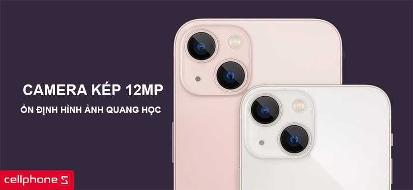
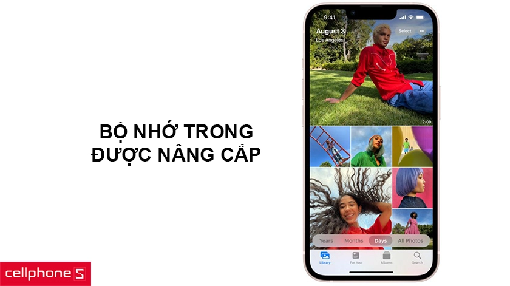
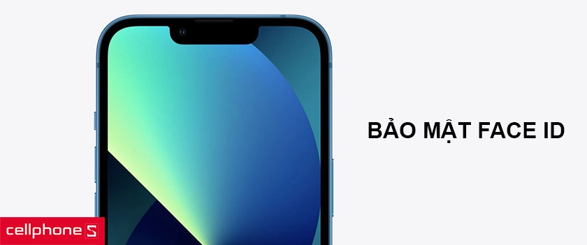

ĐẶC ĐIỂM NỔI BẬT
- Hiệu năng vượt trội - Chip Apple A15 Bionic mạnh mẽ, hỗ trợ mạng 5G tốc độ cao
- Không gian hiển thị sống động - Màn hình 6.1" Super Retina XDR độ sáng cao, sắc nét
- Trải nghiệm điện ảnh đỉnh cao - Camera kép 12MP, hỗ trợ ổn định hình ảnh quang học
- Tối ưu điện năng - Sạc nhanh 20 W, đầy 50% pin trong khoảng 30 phút
Đánh giá iPhone 13 - Flagship được mong chờ năm 2021
Cuối năm 2020, bộ 4 iPhone 12 đã được ra mắt với nhiều cái tiến. Sau đó, mọi sự quan tâm lại đổ dồn vào sản phẩm tiếp theo – iPhone 13. Vậy iPhone 13 sẽ có những gì, hãy tìm hiểu ngay sau đây.
Thiết kế với nhiều đột phá
Về kích thước, iPhone 13 sẽ có 4 phiên bản khác nhau và kích thước không đổi so với series iPhone 12 hiện tại. Nếu iPhone 12 có sự thay đổi trong thiết kế từ góc cạnh bo tròn (Thiết kế được duy trì từ thời iPhone 6 đến iPhone 11 Pro Max) sang thiết kế vuông vắn (đã từng có mặt trên iPhone 4 đến iPhone 5S, SE).
Thì trên điện thoại iPhone 13 vẫn được duy trì một thiết kế tương tự. Máy vẫn có phiên bản khung viền thép, một số phiên bản khung nhôm cùng mặt lưng kính. Tương tự năm ngoái, Apple cũng sẽ cho ra mắt 4 phiên bản là iPhone 13, 13 mini, 13 Pro và 13 Pro Max.

Phần tai thỏ trên iPhone 13 cũng có thay đổi so với thế hệ trước, cụ thể tai thỏ này được làm nhỏ hơn so với 20%, trong khi đó độ dày của máy vẫn được giữ nguyên. Điểm khác biệt nhất về thiết kế trên thế hệ iPhone 2021 này đó là camera chéo.
Màu sắc trên mẫu iPhone mới này cũng đa dạng hơn, trong đó nổi bật là iPhone 13 màu hồng. Các màu sắc còn lại đề đã từng được xuất hiện trên các phiên bản trước đó như trắng, đen, đỏ, xanh blue.

Màn hình màn hình Super Retina XDR độ sáng cao
Điện thoại iPhone 13 sẽ được sử dụng tấm nền OLED chất lượng cao và có kích thước 6.1 inch, lớn hơn iPhone 13 mini (5.4 inch). Với tấm nền này với công nghệ ProMotion giúp iPhone 13 tiết kiệm pin đến tối đa khi sử dụng. Người dùng cũng có thể dễ dàng điều chỉnh tốc độ làm tươi tùy theo ý thích.

Về khả năng hiển thị, mang đến chất lượng hiển thị vượt trội với màn hình OLED độ phân giải cao, độ sáng lớn. Nhờ đó người dùng có thể nhìn rõ trong nhiều điều kiện sáng khác nhau, kể cả ngoài trời.
Cụ thể, màn hình Super Retina XDR với độ sáng cao lên đên 800 nits, và tối đa có thể lên tới 1200 nits cùng dải màu rộng P3, tỉ lệ tương phản lớn. Phía bên ngoài màn hình được phủ lớp oleophobic giúp chống bám vân tay. Nhờ đó hạn chế được các tình trạng bám bụi bẩn và mồ hôi trong quá trình sử dụng.
Camera kép 12MP, hỗ trợ ổn định hình ảnh quang học
iPhone 13 có một sự thay đổi lớn về camera so với trên iPhone 12 Series. Cụ thể, iPhone có thể được trang bị ống kính siêu rộng mới giúp máy hiển thị được nhiều chi tiết hơn ở các bức hình thiếu sáng. Trong khi đó ống kính góc rộng có thể thu được nhiều sáng hơn, lên đến 47% giúp chất lượng bức ảnh, video được cải thiện hơn.
Cụm camera được trang bị tính năng ổn định hình ảnh quang học cùng cảm biến mới, nhờ đó bức hình chụp mang lại khả năng ổn định.

Số ống kính trên iPhone 13 vẫn được giữ nguyên so với iPhone 12, chỉ khác về vị trí từng ống kinh. Cả hai ống kính vẫn sở hữu độ phân giải 12MP. Trong đó camera góc rộng được trang bị khẩu độ ƒ/1.6 trong khi góc siêu rộng là ƒ/2.4 cùng góc quay 120 độ.
Với iP13, người dùng có thể quay phim chuyên nghiệp với chế độ điện ảnh. Cụm camera này cũng hỗ trợ người dùng chụp cùng lúc nhiều bức ảnh khác nhau mà không cần nhấc ngón tay. Đặc biệt với chế độ chân dung hỗ trợ làm mờ hậu cảnh chuyên nghiệp giúp toàn bức ảnh tập trung vào chủ thể mà người dùng hướng tới.
Ở chế độ chụp Smart HDR 4, máy có thể nhận diện được tối đa bốn người khác nhau trong một khung hình. Sau đó sẽ tiến hành tối ưu hóa ánh sáng, độ tương phản và tone mày cho từng người, mang lại một bức ảnh chất lượng tốt nhất. Nếu sử dụng bên đêm để chụp các bức ảnh thiếu sáng, lúc này chế độ Deep Fusion kích hoạt và phân tích chế độ phơi sáng ở từng pixel.

Nhờ đó, ảnh chụp trên điện thoại hứa hẹn mang đến chất lượng như được chụp từ một máy ảnh chuyên nghiệp. Hình ảnh cho ra với chi tiết rõ, dải nhạy sáng cao, màu sắc chân thực. Khả năng chụp đêm trên 13 cũng được cải thiện với khả năng phơi sáng tốt hơn mang đến nhiêu chi tiết hơn.
Về camera trước, điện thoại vẫn được trang bị camera đơn nằm trong notch tai thỏ với độ phân giải 12MP cùng khẩu độ ƒ / 2.2. Camera selfie này cũng được trang bị nhiều công nghệ chụp ảnh chuyên nghiệp như hiệu ứng bokeh, chế độ điện ảnh, Animoji và Memoji,... mang lại những bức hình selfie chất lượng.

Khả năng quay video được cải thiện
Về khả năng quay video, iPhone 13 có thể hỗ trợ quay video 4K ở tốc độ ở ba tốc độ khung hình khác nhau. Máy cũng hỗ trợ tính năng ổn định hình ảnh quang học cùng khả năng zoom 3x. Nhờ đó, hứa hẹn mang để khả năng quay phim chuyên nghiệp.

iPhone 13 cũng hỗ trợ nhiều công cụ tùy chỉnh nâng cao với công nghệ Dolby Vision cùng khả năng quay Video HDR với độ phân giải 4K. Đặc biệt, người dùng có thể làm mọi việc trên chiếc điện thoại này từ quay phim, chỉnh sửa đến render video một cách mượt mà.
Tốc độ 5G tốt hơn với nhiều băng tần
Thế hệ iPhone mới được cải thiện chất lượng 5G với nhiều băng tần hơn. Nhờ đó việc xem trực tuyến hay tải xuống dữ liệu diễn ra nhanh hơn. Đặc biệt với chế độ dữ liệu thông minh, thiết bị sẽ tự động phát hiện và giảm tải tốc độ khi không cần thiết kể tiết kiệm năng lượng.

Hiệu năng vượt trội với chip Apple A15
iPhone 13 Series sẽ được trang bị con chip Apple A15 Bionic, chip set được sản xuất trên quy trình 5nm. Theo nhà sản xuất, con chip Apple A15 Bionic cho CPU nhanh hơn 50% và GPU nhanh hơn 30% so với đối thủ.

Hiệu năng trên iPhone là một điều khỏi phải bàn cãi. Vẫn mang trọng mình một sức mạnh vượt trội nhờ con chip Apple A15 được tối ưu, hệ điều hành iOS tùy biến. iPhone 13 cũng có thể chiến tốt mọi tựa game mới nhất mới max cấu hình đồ họa, mang đến những trải nghiệm chơi game mượt mà.
Công nghệ pin mới nâng cao thời gian sử dụng
Với bộ vi xử lý mới được tối ưu, điện thoại iPhone 13 mang lại viên pin với thời gian sử dụng lâu dài hơn. Cũng như mọi năm, Apple không tiết lộ chính xác dung lượng pin cụ thể trên thiết bị của mình. Tuy hiên, theo hãng công bố thì thời lượng sử dụng pin trên iPhone 13 sẽ được gia tăng đáng kể lên khoảng 2,5 tiếng so với thế hệ trước đó.

Dung lượng bộ nhớ được mở rộng
iPhone 12 sở hữu bộ nhớ tiêu chuẩn 64GB và cao cấp nhất là 512GB. Nhưng sang iPhone 13 lại khác, iPhone 13 phiên bản cao cấp có thể sẽ loại bỏ phiên bản 64GB thay vào đó bản dung lượng bộ nhớ tiêu chuẩn là 128GB cùng tùy chọn dung lượng lớn nhất lên đến 512B.

Về dung lượng RAM, chưa có thông tin chi tiết. Tuy nhiên, dự đoạn sẽ được trang bị bộ nhớ RAM từ 4-6GB. Với dung lượng này, người dùng có thể thoải mái đa nhiệm trong sử dụng hàng ngày.
Các tính năng khác: thẻ sim, wifi, siri
Ngoài những điểm trên, iPhone 13 cũng vẫn được trang bị 2 sim (1 sim vật lý và 1 esim), tiếp tục hỗ trợ 5G như trên iPhone 12. Các kết nối không dây khác như wifi, bluetooth cũng được trang bị những công nghệ mới. Hey Siri cũng là một tính năng yêu thích của người dùng iPhone.

Máy vẫn được trang bị công nghệ mở khóa và bảo mật Face ID - nhận đạng khuôn mặt với tốc độ nhanh hơn. Bên cạnh đó là chuẩn kháng nước và bụi bẩn IP68 theo chuẩn IEC 60529.
Điện thoại iPhone 13 giá bao nhiêu? Ra mắt khi nào?
Điện thoại iPhone 13 đã được chính thức giới thiệu đến người tiêu dùng tại sự kiện "California Streaming" cùng một loạt các sản phẩm Apple khác như iPad mini 6, Apple Watch Series 7 vào ngày 14/9 vừa qua.
Sản phẩm dự kiến lên kệ với mức giá khoảng gần 25 triệu đồng ở phiên bản tiêu chuẩn và hơn 30 triệu đồng - gần 31 triệu cho phiên bản cấu hình cao cấp nhất. Mức giá này không có sự chênh lệnh quá lớn so với iPhone 12 trước đó. Máy sẽ sớm được lên kệ các thệ thống bán lẻ trong thời gian sắp tới.
Mua iPhone 13 chính hãng VN/A giá rẻ tại Technophile Store
Nếu quan tâm đến iPhone 13 hãy thường xuyên truy cập Technophile Store để cập nhật những thông tin mới cũng như giá bán chính xác một cách nhanh chóng. Nhanh tay đặt ngay để là một trong những người sở hữu siêu phẩm iPhone 13 mới nhất tại Việt Nam. Nếu bạn đang quan tâm điện thoại iPhone chính hãng, hãy đến với Technophile Store – hệ thống ủy quyền chính hãng Apple để mua cho mình điện thoại iPhone chính hãng với giá ưu đãi.